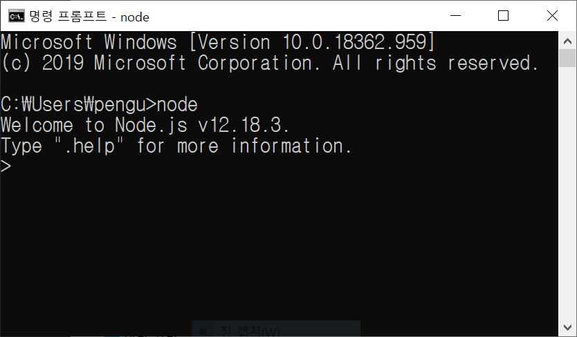
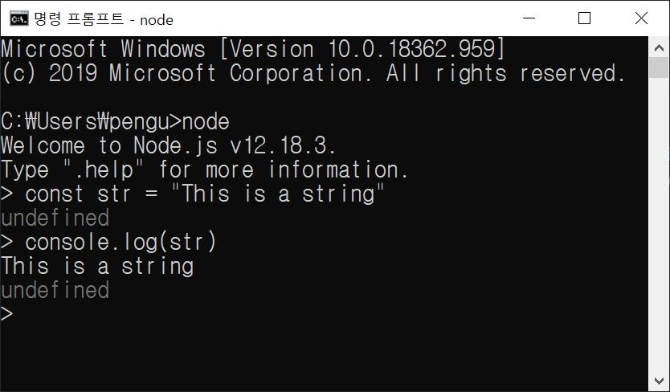

자바스크립트는 스크립트 언어 특성상 미리 빌드하지 않아도 코드 실행이 가능하다. REPL은 대화형 콘솔을 의미하는데, Read, Eval, Print, Loop 라는 의미이다. 콘솔을 사용하기 위해서는 노드가 설치된 환경의 명령 프롬프트에서 node 명령어를 입력하면 된다.
프롬프트가 > 모양으로 바뀌었다면 자바스크립트를 한줄씩 대화형으로 실행하는 것이 가능하다.
대화형이 아닌, 자바스크립트 파일을 한번에 실행시키는 것도 가능하다. 자바스크립트 파일을 만들어 해당 디렉토리에서 명령 프롬프트를 실행시킨다(파일명 temp.js).
1 2 3 4 5 | const myFunc = () => { console.log("this is my function!") } myFunc();myFunc();myFunc(); |